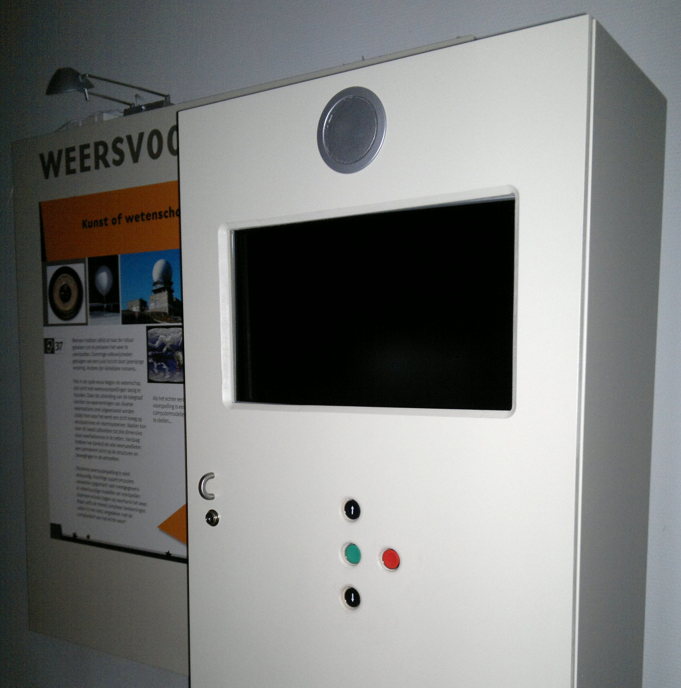
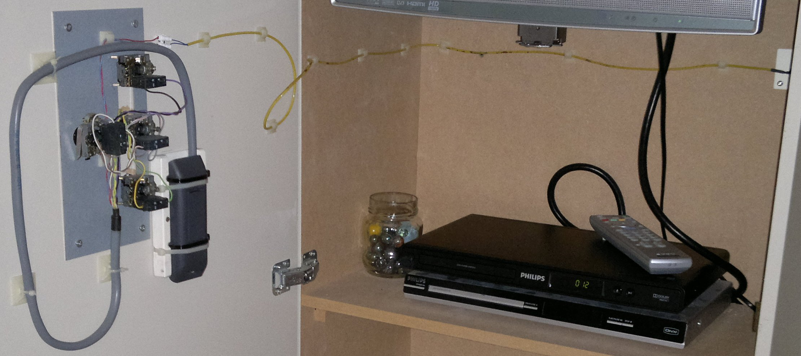

Loading...
Deze presentatie is opgebouwd in HTML5
Druk op de → toets om verder te gaan.
Presentatie controles:
- ← en → om van slide te wisselen.
- Ctrl/Command en + of - om in en uit te zoomen.
- T om het thema te veranderen.
Ontwikkelen van een multimediaframework
Tim Besard
Deze presentatie omvat...

Een kiosk over de weersvoorspellingen.
- Voorstellingen: DVD videobestanden
- Interactie: menu van de film
- Gebruikersinput: afstandsbediening DVD-speler

DVD-speler binnenin een kiosk.
Robuustheid: DVD-spelers verslijten snel
Flexibiliteit:
- Compatibiliteit afstandsbedieningen
- Sterk beperkte voorstellingen
Beheer: alles verloopt manueel
Ad-Astra III
Multimediaframework voor museumkiosken
Robuustheid verbeteren
- Hardware die lang meegaat
- Functioneren in suboptimale omstandigheden
Flexibiliteit verhogen
- Hardware- en platformonafhankelijkheid
- Rijke en dynamische voorstellingen
Beheer vereenvoudigen
Client-server model
Server
- Opslag en distributie van voorstellingen
- Configureren van kiosken
- Beheersinterface
Clients: identieke soft- en hardware voor alle kiosken
- Weergave van voorstellingen
- Verwerken van gebruikersinput
- Compatibiliteit: huidige voorstellingen hergebruiken
- Distributie: efficiëntie bij versturen over netwerk
- Flexibiliteit: mooie voorstellingen met dynamische inhoud
- Embeddability: weergave vanuit kiosk-software
- Complexiteit: laagdrempelig
- Toegankelijk: eenvoudig aan te passen door beheerder
- Efficiënt: lage netwerkbelasting
Subversion repository
Binnen applicatie: omvat in serverapplicatie- Externe server: beheerd door serverapplicatie
- Toegankelijk: eenvoudig aan te passen door beheerder
- Dynamisch: automatische (her)configuratie
- Persistentie
Gesplitste aanpak: server configureert de kiosken.
XML bestanden in de Subversion repository:
- Validatie: XSchema bestand
- Wijzigingen detecteren: clientside Subversion bindings
- Toegankelijk: eenvoudig te wijzigen
UPnP interface:
- Discovery: UUID (hardware gebaseerd) identificeert kiosk
- Services: toepassen van instellingen, ondernemen acties
Technologieën:
- Jetty: embeddable servlet engine
- Java Web Toolkit (JWt): Qt-interface voor webapplicaties
Synology DS207+
- Goedkoop
- Robuust: meerdere schijven met RAID-1, gemaakt om 24/7 te draaien
- Flexibel: Linux-based, met package manager
WebKit rendering engine:
- Embeddable: zeer eenvoudig met QtWebKit
- QtWebKit Bridge: connectie tussen JavaScript en applicatie
Lokale interface ook in HTML → uniforme codebase
- Progress indicators
- Error messages
- Verborgen statusschermen
Genesi EFIKA MX
- Relatief goedkoop: €110
- Performant: 800 MHz ARM, OpenGL ES 2.0 GPU
- Flexibel: booten van SD, JTag
- Robuust: geen bewegende componenten (inwendige SSD)
Besturingssysteem: Embedded Debian
- Compact
- Eenvoudig beheer: repository met eigen applicaties